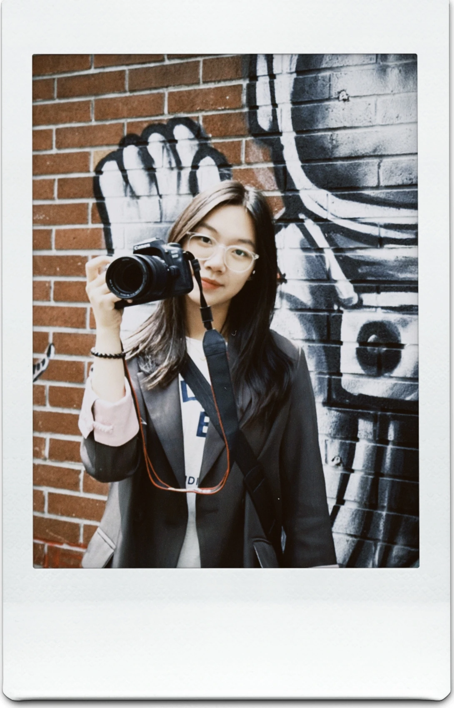

张梦婷Tina Zhang
作为一个AI时代的新传生，我们总是很难说清自己到底会做什么。我写故事，做策划，拍视频，剪片子，读数据，deepthink，偶尔写一点点代码，总是保持好奇。我想让创意被看见，让传播产生价值。

ENTP，2004年11月出生于上海，籍贯浙江台州。
中国人民大学新闻学院大四，修读新闻学+法学双学位，保研至清华大学新闻与传播学院全球科技传播双硕士项目（与NTU联培）。（美好地研0中🐈）
工作语言：中文，英语（雅思8.0）🌍
她关注AI、平台与传播现象，做过新媒体运营、营销投放、校园媒体和法律咨询业务。
她喜欢做内容、做创意、做战略。
擅长沟通协作，擅长快速学习，擅长解决问题。
她会是一个靠谱的合作者。
手边之物
Creative Campaigns
创意传播案例
让好想法被看见、被传播。
Long-form Writing
特稿
在故事的细节里，寻找一个时代更长、更慢的回声。
Digital Publishing
新媒体作品
海报、推文、H5 与可视化，让内容找到适合它的形状。
Image & Video
影像
记录光线经过的地方。
摄影展间
SELECTED VIDEO CLIPS 视频节选
I am rooted, but I flow.
Taken from Type Garden by @art.akshat